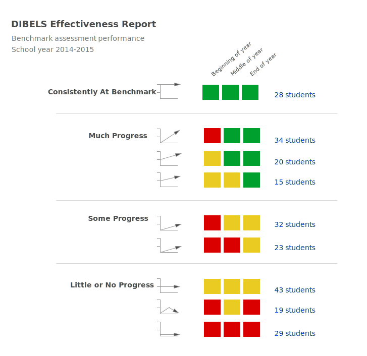

Example: mCLASS Beacon site architecture
Before

This website had an overly-complicated information architecture with redundant paths.
{kind=link}
Example: Data visualization for "DIBELS" standardized test results
Before

The original report was difficult to understand. By looking at this, how do you know which students need help?
After
{kind=link}
Line charts, colors, and labels help you quickly interpret the data.
Meaningful categories group students with common needs.
Earlier Drafts


Example: mCLASS Beacon assignment widget
Before

The original modal had many collaspable sections which hid data.
The layout didn't tell the user what to look at first.
The look was not modern.
After

The redesigned modal limits collapseable sections to only advanced settings. The rest of the information is readily available.
The vertical layout guides the user to read the information in a logical order.
Created in HTML, CSS, and JS on Bootstrap for a modern look.
Example: Student-facing benchmark test report
Before

The Learning Standards rows were not sorted.
The green and red graphics were not distinguishable on a black-and-white print out.
One report spanned three printed pages. For a school's worth of printed reports that was lot of paper, a concern for the client. The graphics also required a lot of ink to print.
After

No logos and smaller Summary section save space.
Green checkmarks indicate passed standards and no checkmark indicates failed standards, a distinction that remains in a black-and-white print out.
Learning Standards rows are sorted by score, making it easy to find passed versus failed.
A single report fits on one page instead of three.
In-House Online directory

I created an online searchable directory to make all customer data available to the entire team.
I made it with the UX and development teams in mind, but it quickly became popular with Sales and Marketing, who needed a way to find customers by product line.
Research Data Bank

All my user research goes into a shared databank. Tags and notebooks make data as easy to find as it is to add. Everyone on the team in encouraged to contribute.
Illustrated Sprint Stories

I created a graphic that translated the developers' sprint stories into what they mean to the customers, bridging the gap between UX and Agile development.
The goal is to emphasize not only what we are doing, but why we're doing it.
Example: Mobile app for managing search engine optimizations for small businesses

Page flow for a mobile app uses mini-wireframes to give a sense of complexity and cost.
Example: Mobile app for managing search engine optimizations for small businesses

Annotated wireframes for a mobile app leave little room for confusion.

Each interaction is described in detail.
See more prototypes.
Back to top Top